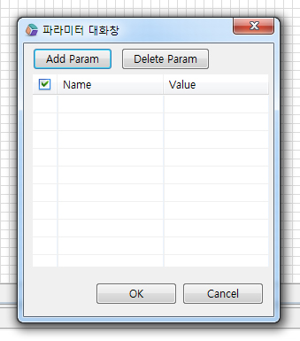

4.Applet
Java 언어로 구성된 간단한 기능의 소규모 프로그램을, 혹은 웹 페이지에 포함되어 작은 기능을 수행하는 프로그램을 삽입합니다.
4.1Property
Property | Description |
|---|---|
accesskey | 객체의 단축 접속키(key)를 지정합니다. |
align | 태그에 대한 align 값을 지정하며 브라우저 윈도우 내에 파일의 위치를 지정하는 방식을 결정합니다. |
altHTML | 객체의 로딩이 실패하면 수행할 대체 HTML입니다. |
archive | 자바 1.1에서는 여러 파일을 압축하여 한번에 다운로드할 수 있도록 jar(Java ARchive)를 지원하는데 브라우저가 서버로부터 다운로드해야 할 jar 파일이 있을 때 사용합니다. |
class | 사용자가 임의의 class를 정의할때 사용합니다. |
code | Java class를 포함하는 파일의 주소입니다. |
codebase | ActiveX 컨트롤이 아직 설치되지 않은 경우에 브라우저가 이 컨트롤을 자동으로 다운로드할 수 있도록 컨트롤의 위치를 확인합니다. 이 값은 표시된 대로 정확하게 입력해야 합니다. |
datafld | oncellchange 이벤트에 의한 데이터 필드입니다. |
datasrc | 데이터에 연결된 src값을 지정합니다. |
groupid | groupid값을 지정합니다. |
hidefocus | 객체의 포커싱 인식 여부를 지정합니다. |
hspace | 왼쪽과 오른쪽에 삽입할 공백의 크기(픽셀)를 설정합니다. |
id | 사용자가 임의의 id를 정의할때 사용합니다. |
lang | 사용된 언어 코드를 지정합니다. |
language | 작성된 스크립트 언어를 지정합니다. |
name | 객체의 Name 속성을 지정합니다. |
src | 객체의 로딩 주소(URL)를 지정합니다. |
title | 일반적인 title 값입니다. |
unselectable | Element의 선택 비활성 유무를 지정합니다. |
vspace | 위쪽과 아래쪽에 삽입할 공백의 크기(픽셀)를 설정합니다. |
4.2브라우저 캡쳐화면
4.3class 적용과 스타일 변경
4.4CSS Overriding
4.5주의사항 및 Tip
Applet에서 사용되는 파라미터는 Applet 컴포넌트를 더블클릭하면, 파라미터 대화창에서 설정이 가능합니다.

[그림 4-1]01